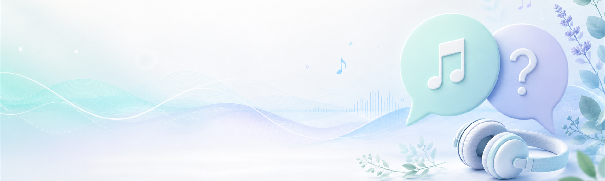

Sim. O site é gratuito e pode ser acessado por qualquer pessoa.

Informação simples
Perguntas frequentes
Tire suas dúvidas sobre o site, as playlists e o uso da plataforma.
Dúvidas comuns
Como podemos ajudar?
Selecione uma pergunta para visualizar a resposta.
Sobre o site
Não. As playlists são um recurso complementar e não substituem o acompanhamento de um profissional qualificado.
A Sonora organiza playlists por objetivos como foco, relaxamento, sono e bem-estar para facilitar sua escolha.
Sobre as playlists
Acesse o catálogo e selecione o filtro “Foco”. Você verá todas as playlists disponíveis para essa finalidade.
Sim. Envie sua sugestão pelo formulário da página de contato.
A proposta é atualizar as seleções conforme novas músicas e categorias forem incorporadas ao projeto.
Precisa de mais ajuda?
Estamos aqui para você
Se a sua dúvida não apareceu acima, fale com a nossa equipe pelo formulário de contato.
Falar com a equipe